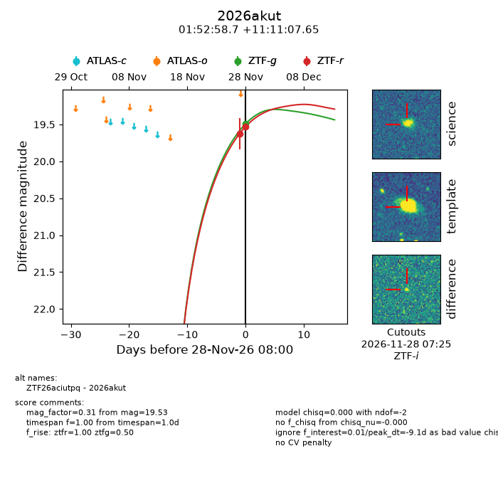
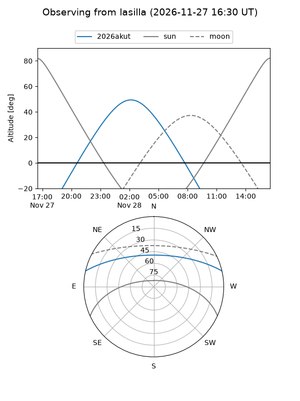
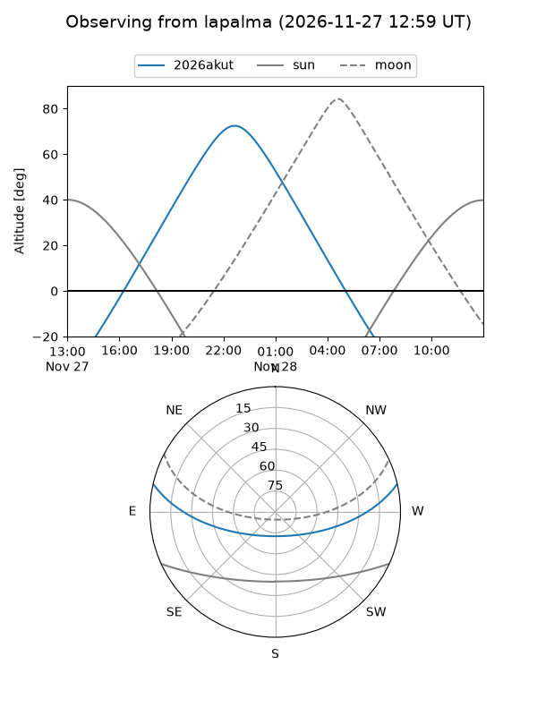
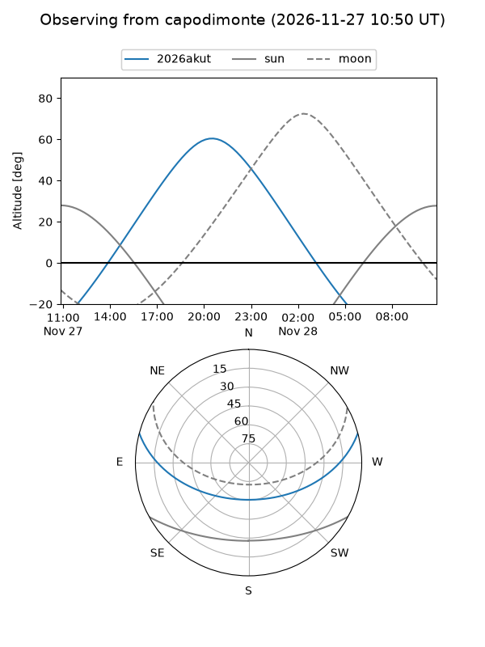
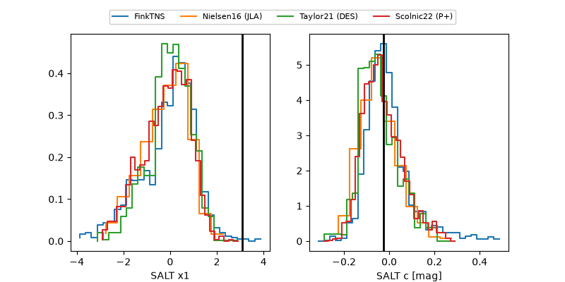

2026akut
Target 2026akut at 2026-11-28 08:01
Aliases and brokers:
FINK-ZTF: ztf.fink-portal.org/ZTF26aciutpq
Lasair-ZTF: lasair-ztf.lsst.ac.uk/objects/ZTF26aciutpq
ALeRCE-ZTF: alerce.online/object/ZTF26aciutpq
YSE-PZ: ziggy.ucolick.org/yse/transient_detail/2026akut
TNS name: wis-tns.org/object/2026akut
Direct TNS query: direct search
alt names
ZTF26aciutpq (ztf,fink_ztf)
2026akut (tns,yse)
Coordinates:
equatorial (ra, dec) = 28.2448,+11.18546
equatorial (HMS+DMS) = 01:52:58.74,+11:11:07.65
galactic (l, b) = (146.2458,-48.88052)
Flags:
peak dt: -9.1
Photometry:
last ztfg=19.50, ztfr=19.53
1 ztfg, 2 ztfr detections
Lightcurve

Visibility



Additional plots
